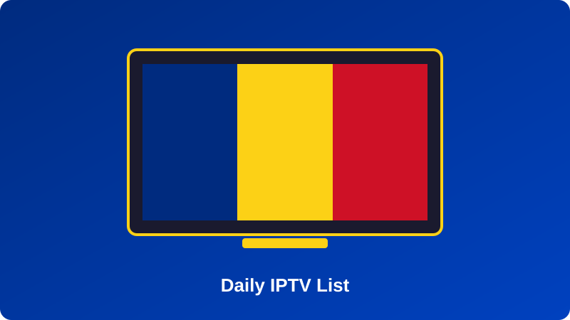
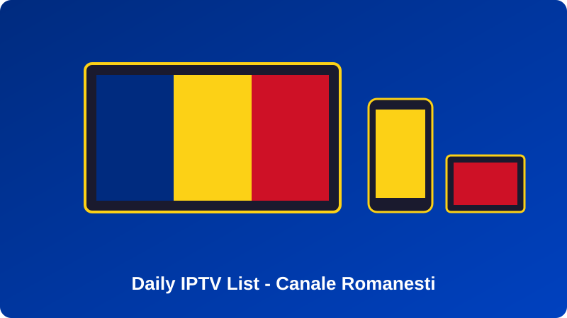

Daca ai cautat vreodata o daily iptv list, stii cum arata cautarea: zeci de pagini, linkuri expirate si promisiuni de canale gratuite care nu pornesc. Vrei sa vezi stirile, un film sau un meci, iar in loc de imagine primesti un ecran negru. Intrebarea este simpla: exista o lista zilnica care chiar merge?
Raspunsul sincer are mai multe nuante. Listele publice exista si uneori functioneaza cateva ore, dar sunt instabile, fara suport si adesea pline de canale straine. In plus, ele nu sunt facute pentru familiile care vor televiziune romaneasca de incredere in fiecare seara, mai ales cand sunt departe de tara.
In acest ghid explicam ce este o daily iptv list, cum functioneaza, ce riscuri ai, cum o adaugi intr-un player si ce alternativa stabila poti alege. Echipa Romania IPTV lucreaza zilnic cu familii din Romania si din diaspora, deci sfaturile vin din situatii reale. Daca esti la inceput, citeste mai intai ghidul despre iptv romania, apoi revino aici pentru partea practica.

Cuprins
- Ce este o daily iptv list si de ce o cauta lumea
- Cum functioneaza listele zilnice de canale
- Canale romanesti intr-o daily iptv list: ce gasesti de fapt
- Riscuri si limite ale unei liste IPTV gratuite
- Alternativa stabila: abonament cu test gratuit
- Cum folosesti corect o lista M3U in player
- Daily iptv list pentru romanii din diaspora
- Sfaturi pentru o experienta fara probleme
- Intrebari frecvente
- Concluzie
Ce este o daily iptv list si de ce o cauta lumea
O daily iptv list este o lista de canale TV, de obicei in format M3U, care se spune ca este actualizata in fiecare zi. Ideea pare simpla: in loc sa platesti un abonament, deschizi lista in player si vezi canalele. In realitate, lucrurile sunt mai complicate, iar cine cauta asa ceva ar trebui sa stie ce primeste de fapt.
Cererea exista pentru ca oamenii vor televiziune romaneasca fara bariere: stiri, filme, sport si emisiuni de weekend. Mai ales romanii din strainatate cauta variante rapide, fara contracte si fara instalatori. De aceea, expresia daily iptv list apare des in cautari, desi rezultatele sunt adesea dezamagitoare.
Ce inseamna "zilnica" in practica
Cuvantul "daily" promite ca linkurile sunt verificate si inlocuite in fiecare zi. In multe cazuri, cineva copiaza automat adrese gasite pe internet si le posteaza fara sa testeze daca merg. Rezultatul este o lista lunga, cu foarte putine canale functionale.
Format M3U si ce contine o lista
Fisierul M3U este un text simplu, in care fiecare canal are un nume, o sigla si o adresa de flux. Playerul citeste adresele si le reda. Daca adresa a expirat, canalul apare in lista, dar ecranul ramane negru.
Diferenta fata de o lista personala
O lista personala vine cu cont propriu si este intretinuta de un furnizor. O lista publica este aceeasi pentru toata lumea, deci este aglomerata si instabila, mai ales seara.
Cum functioneaza listele zilnice de canale
Pentru a intelege de ce o daily iptv list se strica atat de repede, trebuie sa vezi ce se intampla in spate. Fiecare canal din lista este o adresa de internet care duce la un flux video. Cine detine fluxul poate sa il schimbe sau sa il opreasca oricand.
De unde vin adresele
Multe adrese sunt colectate automat din surse publice sau din fluxuri pe care nu le controleaza nimeni. Nu exista un responsabil care sa raspunda daca un canal dispare. Nu exista nici garantie ca adresa de azi va exista maine.
Cum se actualizeaza lista
Unele liste se regenereaza printr-un script, la intervale fixe. Scriptul nu verifica calitatea imaginii si nu stie daca un canal este in limba romana. Pentru utilizator, asta inseamna cautare manuala prin sute de intrari, doar ca sa gaseasca cateva posturi care merg.
De ce se opresc fluxurile
Serverele gratuite sunt limitate. Cand prea multi utilizatori se conecteaza simultan, fluxul se blocheaza sau se intrerupe. Seara, la ora jurnalelor si a filmelor, problema este mai vizibila.
| Caracteristica | Lista zilnica publica | Abonament cu suport |
|---|---|---|
| Stabilitate seara | Scazuta | Ridicata |
| Canale romanesti HD | Putine si variabile | Lista completa |
| Suport in romana | Nu exista | Da, pe WhatsApp |
| Ghid de programe | De obicei lipseste | Inclus |
Canale romanesti intr-o daily iptv list: ce gasesti de fapt
Cand deschizi o daily iptv list, te astepti sa gasesti principalele posturi romanesti. In practica, lista contine amestec de limbi si tari, iar canalele din Romania sunt o mica parte. Mai jos vezi ce apare cel mai des.
Stiri, filme si divertisment
Posturile de stiri si de divertisment sunt cele mai cautate, dar si cele mai des blocate. Un canal poate merge dimineata si sa dispara dupa-amiaza. Pentru un jurnal de seara urmarit cu familia, o astfel de instabilitate este frustranta.
Sport si evenimente live
Transmisiunile sportive consuma multa banda. Listele publice cedeaza primele tocmai in aceste momente, fix cand ai nevoie de ele. Daca urmaresti meciuri, o sursa stabila conteaza mai mult decat orice alt criteriu.
Canale pentru copii si muzica
Desenele animate si posturile muzicale sunt rar intretinute in listele gratuite. Parintii care vor sa aiba un canal sigur pentru copii vor observa ca lipsesc des sau ruleaza intr-o limba straina.
Cum verifici rapid calitatea
Alege trei canale pe care le urmaresti zilnic si testeaza-le in momente diferite: dimineata, dupa-amiaza si seara. Daca doua din trei se blocheaza, lista nu merita folosita. Pentru o lista completa de posturi, vezi si ghidul despre iptv romania.
Riscuri si limite ale unei liste IPTV gratuite
Nu orice daily iptv list este periculoasa, dar riscurile sunt reale si merita cunoscute inainte sa instalezi ceva pe televizor sau pe telefon.
Securitatea dispozitivului
Unele pagini cer instalarea unor fisiere din surse neverificate. Un astfel de fisier poate contine reclame agresive sau programe nedorite. Foloseste doar aplicatii din magazinul oficial al aparatului.
Lipsa suportului
Cand lista nu mai merge, nu ai cui sa ceri ajutor. Nu exista numar de contact, nu exista raspuns, iar pierzi seara cautand alta lista in locul filmului pe care voiai sa il vezi.
Calitate imprevizibila
Aceeasi lista poate afisa un canal HD azi si unul pixelat maine. Fara control al serverului, nimeni nu poate promite o calitate constanta, iar rezultatul este o experienta care variaza de la o zi la alta.
Aspecte legale
Multe fluxuri din listele publice nu au drepturi clare de difuzare. Daca vrei un serviciu transparent, alege un furnizor care iti spune exact ce primesti si care iti da un contact real. Citeste si explicatiile despre code iptv pentru a vedea cum arata un acces personal.
Alternativa stabila: abonament cu test gratuit
In locul unei daily iptv list care se schimba mereu, un abonament cu suport ofera lucrul de care ai nevoie: canale care merg in fiecare seara. Nu trebuie sa verifici nimic zilnic si nu cauti linkuri noi.
Ce primesti cu un serviciu dedicat
Primesti acces personal, lista completa de canale romanesti, ghid de programe si o persoana care raspunde in romana. Daca apare o problema, o rezolvi in minute, nu in zile.
Testul gratuit inainte de plata
Un furnizor serios iti permite sa testezi serviciul. Astfel vezi calitatea in orele de varf si decizi cu informatii reale. La Romania IPTV testul se cere pe WhatsApp, fara card si fara contract.
Cum compari ofertele
Verifica numarul de canale romanesti, calitatea HD, numarul de conexiuni simultane si disponibilitatea suportului. Criteriile complete sunt explicate in articolul despre cel mai bun iptv.
Ce inseamna un pret corect
Un abonament lunar costa, de regula, cat doua cafele pe saptamana. Daca socotesti timpul pierdut cu liste care nu merg si nervii dinaintea unui meci, diferenta se vede repede in favoarea unui serviciu stabil.

Cum folosesti corect o lista M3U in player
Indiferent daca ai o lista proprie sau una primita de la un furnizor, pasii pentru a o folosi sunt aproape aceiasi. O daily iptv list se adauga in player la fel ca orice alt fisier M3U.
- Instaleaza un player IPTV din magazinul aparatului.
- Deschide sectiunea pentru adaugarea unei liste.
- Alege varianta cu link M3U sau cu fisier local.
- Lipeste adresa exact cum ai primit-o, fara spatii.
- Salveaza si asteapta incarcarea canalelor.
Greseli frecvente la adaugare
Cea mai comuna greseala este un spatiu in plus la finalul adresei. Urmeaza adresele taiate din cauza copierii pe telefon si listele prea mari, care incarca greu pe aparatele vechi.
Organizarea canalelor favorite
Dupa incarcare, creeaza o lista de favorite cu cele 15-20 de canale pe care le vezi des. Astfel nu mai derulezi prin mii de intrari si ajungi direct la ce te intereseaza.
Ghidul de programe EPG
Listele publice vin rar cu ghid de programe. Un serviciu dedicat il include, iar tu vezi ce ruleaza acum si ce urmeaza, fara sa cauti pe alte site-uri. Detalii despre acces gasesti si in articolul coduri iptv romania.
Daily iptv list pentru romanii din diaspora
Pentru un roman din Germania, Italia, Spania, Belgia sau Marea Britanie, televiziunea romaneasca inseamna legatura cu casa. O daily iptv list pare solutia rapida, dar distanta si fusul orar fac stabilitatea si mai importanta.
Internetul din strainatate
Un abonament functioneaza oriunde ai internet stabil, deci nu depinde de antena sau de operatorul local. In schimb, o lista publica poate fi blocata sau limitata in anumite tari, ceea ce o face si mai nesigura pentru cei plecati.
Familia in jurul televizorului
Bunicii vor jurnalul, copiii vor desene, iar parintii vor filme. O lista care merge doar pe jumatate strica seara intregii familii. Un serviciu cu suport in limba romana rezolva astfel de situatii rapid.
Mai multe ecrane
Poti vedea canalele pe televizor, telefon si laptop, atata timp cat abonamentul permite conexiunile necesare. Cere de la inceput numarul de conexiuni potrivit casei tale.
Cum se descurca alte comunitati
Si alte comunitati din diaspora folosesc servicii dedicate in locul listelor publice. Poti vedea abordarea la greek iptv sau la tilaa iptv si sa compari cu ce primesti la Romania IPTV.
Sfaturi pentru o experienta fara probleme
Chiar daca ai ales un serviciu stabil, cateva obiceiuri simple te ajuta sa eviti problemele. Ele se aplica si daca mai incerci, din curiozitate, o daily iptv list gratuita.
Conexiune prin cablu
Ori de cate ori este posibil, conecteaza boxul prin cablu Ethernet. Wi-Fi-ul merge pentru un singur aparat apropiat de router, dar cablul ramane varianta sigura seara.
Viteza minima de internet
Pentru HD ai nevoie de aproximativ 10 Mbps, iar pentru 4K de aproximativ 25 Mbps. Daca mai multe aparate folosesc reteaua, aduna cerintele.
Actualizari si repornire
Actualizeaza aplicatia si reporneste din cand in cand aparatul. Memoria plina este una dintre cauzele cele mai frecvente ale blocajelor.
Pastreaza datele de acces in siguranta
Nu trimite datele contului in grupuri publice. Oricine le vede poate ocupa conexiunile pe care le-ai platit.
Vrei canale romanesti care merg in fiecare seara?
Scrie-ne pe WhatsApp si primesti un test gratuit cu Romania IPTV: fara card, fara contract, cu suport in limba romana.
Cere test gratuit pe WhatsAppIntrebari frecvente
Ce este o daily iptv list?
Este o lista de canale TV in format M3U, care se pretinde actualizata zilnic. De obicei este publica, gratuita si nu are suport sau garantie de functionare.
Este o daily iptv list gratuita sigura?
Nu intotdeauna. Poate contine linkuri moarte, reclame sau cere instalari dubioase. Foloseste doar aplicatii din magazinul oficial si nu da date personale.
De ce nu merg canalele din lista?
Adresele de flux expira sau sunt blocate de proprietar, iar serverele gratuite se aglomereaza. Lista nu este verificata de nimeni, deci nu exista remediere.
Cum adaug o lista M3U pe televizor?
Instalezi un player IPTV, alegi optiunea de adaugare a listei, lipesti adresa M3U fara spatii si salvezi. Canalele se incarca in cateva secunde.
Care este alternativa la o daily iptv list?
Un abonament cu suport, care ofera canale romanesti stabile, ghid de programe si ajutor in limba romana. Il poti testa gratuit inainte sa platesti.
Pot vedea canale romanesti in strainatate?
Da. Serviciul depinde doar de conexiunea la internet, deci functioneaza in orice tara, inclusiv pentru romanii din diaspora.
Cum primesc un test gratuit?
Scrie-ne pe WhatsApp, spune ce aparat folosesti si primesti acces de test fara card si fara contract.
Cate dispozitive pot folosi simultan?
Depinde de abonament. Numarul de conexiuni se stabileste la comanda si poate fi marit daca ai mai multe ecrane in casa.
Concluzie
O daily iptv list poate parea solutia perfecta, dar stabilitatea ei depinde de noroc. Pentru televiziune romaneasca de incredere, mai ales in diaspora, merita un serviciu cu suport, ghid de programe si test gratuit. Testeaza seara, in orele de varf, si decide pe baza rezultatelor.
Pentru mai multe informatii, citeste ghidul iptv romania, apoi scrie-ne pe WhatsApp si porneste-ti canalele preferate cu Romania IPTV.
Citeste in continuare: cel mai bun iptv, code iptv si coduri iptv romania.